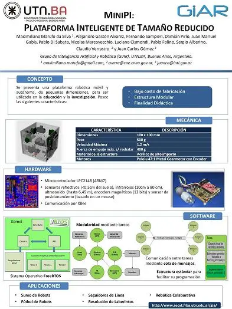

XV Reunión.
La presentación se basa en una plataforma robótica móvil, autónoma, inteligente, de múltiple propósito y tamaño reducido, para ser utilizada en investigación y educación. Gracias a sus características:
Características
- Bajo costo.
- Estructura modular.
El sistema está soportado por un microcontrolador LPC2148 (ARM7), el cual permite embeberle un sistema operativo.
Las aplicaciones en la que hemos ensayado la estructura son:
- Robótica colaborativa.
- Fútbol de robots.
- Seguidores de línea.
- Resolución de laberintos.
Para más detalles puedes leer el paper final del proyecto: